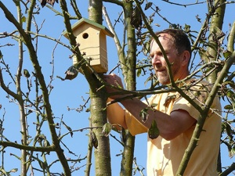

<h1>
	Jardin sauvage ou naturel :<br />Animaux, abris et nourrissage
</h1>

<?php 
    $prec = "_4";
    $suiv = "_6";
    $precName = "Choix des végétaux";
    $suivName = "Entretien";
    include "fragments/navPhilosophie.html";
?>

<div class="present"
	style="text-align: center; width: 80%; margin-left: 50px;">
	<a href="?page=biologique/refuge_lpo"> &gt;&gt;&nbsp;Voir un artile
		plus détaillé sur les refuge <acronym
		title="Ligue pour la Protection des Oiseaux"> LPO</acronym>, pour
		votre jardin ?&nbsp;&lt;&lt;
	</a>
</div>
<p>S'agissant des animaux, le mot d'ordre est simple&nbsp;: il ne
	faut procéder à aucune introduction. Tout d'abord, de nombreuses
	espèces sont protégées et il est interdit de déplacer les individus
	(même au stade de l'oeuf). Ensuite, il est impossible d'être absolument
	certain que le jardin conviendra à l'espèce, et l'introduction risque
	de se solder par un échec. Enfin, certains animaux peuvent modifier
	fortement l'équilibre écologique et nuire à la biodiversité&nbsp;; il
	est ainsi fortement déconseillé d'introduire poissons et canards dans
	une mare de surface réduite. Si le jardin convient à certaines espèces
	animales, elles y viendront d'elles-mêmes et s'y implanteront
	durablement  pour autant que les animaux domestiques les laissent
	tranquilles.</p>


<p>Pour attirer un maximum de vie animale sauvage, toutes sortes
	d'aménagements sont possibles&nbsp;: plates-bandes de fleurs riches en
	nectar, carré de tournesols et autres plantes fournissant en abondance
	des graines appréciées des oiseaux, table de nourrissage et mangeoires
	(uniquement en hiver, car le type de nourriture généralement proposé ne
	convient pas au nourrissage des jeunes), nichoirs pour différentes
	espèces d'oiseaux, matériaux de construction pour les nids (boue,
	mousses, restes de laine...), abris à hérissons, à insectes et à
	chauves-souris... Le jardinier peut également multiplier à l'envi
	toutes sortes de micro-milieux favorables à la diversité de la vie
	sauvage&nbsp;: tas de bois, de feuilles mortes, de pierres, petits
	fagots de tiges creuses, talus secs et creux humides, souche ou tronc
	d'arbre mort qui sera colonisé par les champignons... Lorsque le jardin
	est entouré de murs, ceux-ci peuvent être couverts de plantes
	grimpantes. Un tas de compost abrite une foule d'animaux minuscules et
	sert de garde-manger aux insectivores du jardin.</p>

<?php 
    $prec = "_4";
    $suiv = "_6";
    $precName = "Choix des végétaux";
    $suivName = "Entretien";
    include "fragments/navPhilosophie.html";
?>
